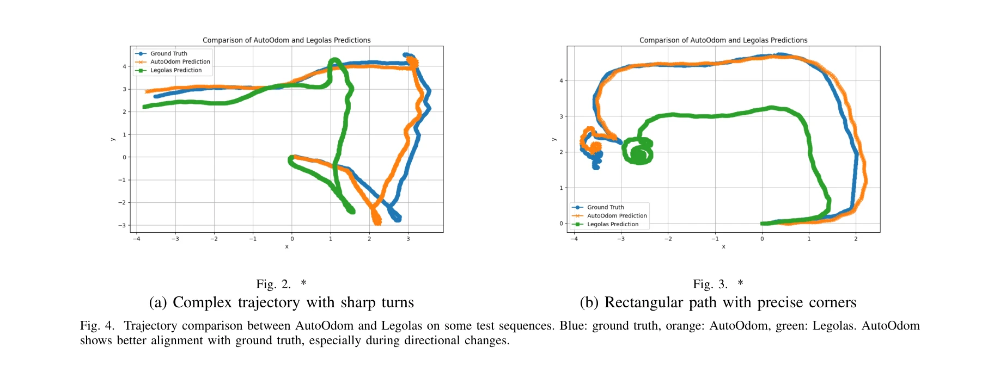

Essence

Fig. 1. Overview of the AutoOdom system.
AutoOdom은 자동회귀 학습을 기반으로 하는 2단계 훈련 패러다임으로 다리 로봇의 고유감각 주행거리 추정 성능을 크게 향상시킨 시스템이다. 대규모 시뮬레이션 데이터로 비선형 동역학을 학습하고 제한된 실제 데이터로 sim-to-real 갭을 해결한다.
저자: Changsheng Luo, Yushi Wang, Wenhan Cai, Mingguo Zhao | 날짜: 2025-11-24 | URL: https://arxiv.org/abs/2511.18857
Fig. 1. Overview of the AutoOdom system.
AutoOdom은 자동회귀 학습을 기반으로 하는 2단계 훈련 패러다임으로 다리 로봇의 고유감각 주행거리 추정 성능을 크게 향상시킨 시스템이다. 대규모 시뮬레이션 데이터로 비선형 동역학을 학습하고 제한된 실제 데이터로 sim-to-real 갭을 해결한다.

Fig. 4. Trajectory comparison between AutoOdom and Legolas on some test sequences. Blue: ground truth, orange: AutoOdom,
Fig. 1. Overview of the AutoOdom system.
총평: AutoOdom은 자동회귀 학습과 효율적인 2단계 훈련으로 proprioceptive odometry의 중요한 한계를 해결하며, 강력한 실험 결과와 포괄적 ablation 연구로 견고한 기여를 제시한다. 다만 특정 로봇 플랫폼 검증과 다양한 환경으로의 일반화 가능성 확인이 후속 과제다.